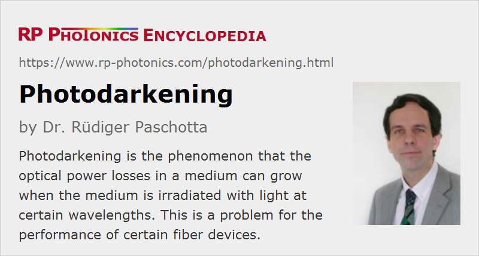

Photodarkening
Definition: the phenomenon that the optical power losses in a medium can grow when the medium is irradiated with light at certain wavelengths
Alternative terms: photochromic damage, photo-induced absorption
German: lichtinduzierte Verluste
How to cite the article; suggest additional literature
Author: Dr. Rüdiger Paschotta
Various transparent optical media such as optical fibers, laser crystals and nonlinear crystal materials exhibit photodarkening (sometimes also called photochromic damage or photo-induced absorption) when they are irradiated with light at certain wavelengths. This means that the transmission losses resulting from absorption or scattering grow with time. The mechanisms involved and the characteristic parameters (e.g. the maximum amount of losses, its spectral shape, the dependence on light intensity, wavelength and duration of irradiation, and the reversibility) can vary greatly, depending on the material. In many cases, the photodarkening mechanism involves the formation of color centers or other microscopic structural transformations in the medium. Photodarkening can lead to serious performance degradations and lifetime limitations of optical devices, and its minimization may require the optimization of materials and operation conditions.
In the following sections, some technologically important situations with unwanted and sometimes reversible photodarkening effects are discussed. See also the article on photochromic materials.
Photodarkening Caused by Ultraviolet Light
Silica fibers can transmit ultraviolet light, but with propagation losses which are significantly higher than in the visible or near-infrared spectral region. In addition, a rapid further increase in losses can be induced by the ultraviolet light. To a significant extent, this UV-induced photodarkening can be reduced with certain dopants (e.g. fluorine) or other treatments. Fibers with high hydroxyl (OH) content are often found to be superior to low-OH fibers, even though the latter have better transmission in the near-infrared region. However, there are also low-OH fibers with good UV transmission and resistance. Also, hydrogen-impregnated fibers can exhibit drastically improved resistance against irradiation with excimer laser light at 193 nm [15], even though hydrogen loading is in other cases used for increasing the photosensitivity of fibers for UV writing of fiber Bragg gratings. Certainly, the effectiveness of such methods for improved UV transmission and resistance depends strongly on the wavelengths involved.
Even blue light can cause photodarkening in silica-based fibers, when they are doped with germanium [1]. The damage mechanism involves a two-photon excitation process.
Note that similar photodarkening can result from irradiation with gamma rays. This is relevant e.g. for space applications of fiber devices.
Photodarkening in Ytterbium-doped Silica Fibers
Ytterbium-doped optical fibers can exhibit severe transmission losses, which are strongest at short wavelengths (e.g. in the visible spectral range) and much weaker (but still important) e.g. in the 1-μm spectral region, where ytterbium-doped fiber lasers and amplifiers operate. Such losses can occur in new fibers [7] but can also grow during operation of a fiber laser or amplifier [17]. The rate with which these losses grow appears to be proportional to the seventh power of the density of excited ytterbium ions [17]. This means that a fast degradation of such fibers can result from operation with a high fractional ytterbium excitation density (as can occur, e.g., in core-pumped fiber amplifiers), particularly for fibers with a high doping concentration and poor homogeneity (formation of ion clusters). On the other hand, the strong dependence on the excitation density suggests that many devices can be designed to operate in a relatively safe operating regime where long device lifetimes can be expected. Difficult cases are those where a high doping concentration is required (e.g. in order to mitigate nonlinear effects via a reduced fiber length), or where high excitation levels are inevitable (e.g. fiber lasers operating around 975 nm).
The photodarkening effect normally appears to be permanent, although it has been demonstrated that it can be reversed by heating the fiber [18] or by irradiation with ultraviolet light [19]. Further studies will hopefully reveal the detailed physical mechanism and the dependence on the chemical composition of the fiber core. There is evidence for the belief that the formation of Yb2+ ions plays an important role [21], although it is not yet clear how Yb2+ ions can be generated by exciting Yb3+ ions. It is already known that Yb-doped phosphate fibers [20] and phosphosilicate fibers [21] exhibit much weaker photodarkening. Also, codoping with cerium appears to improve the durability of Yb-doped fibers [22, 23].
Photodarkening in Thulium-doped Fibers
There are reports of photodarkening occurring in thulium-doped silica fibers [2], more precisely in phosphosilicate and germanosilicate glasses, where a broadband loss (particularly at short wavelengths) occurs following irradiation with high peak powers, e.g. from a mode-locked laser. A crucial ingredient is the excitation of high-lying energy levels of the Tm3+ ions. This phenomenon may not be technologically serious, since thulium-doped silica fibers are used for continuous-wave infrared lasers where high pump intensities and high concentrations of highly excited thulium ions are not required.
The situation is different for thulium-doped fluoride fibers as used mainly for upconversion fiber lasers, generating blue light when being pumped with infrared light e.g. around 1140 nm. Although this three-step upconversion scheme could in principle be very efficient [8], the actual device performance can be severely degraded by photodarkening [5, 6]. As for silica fibers, it is believed that photodarkening is related to the formation of color centers, which becomes possible if ions are excited to energies above the band gap energy of the host glass. Absorption of blue light (e.g. via upconversion lasing) has been shown to reduce at least temporarily the induced absorption, probably by removing color centers. In this sense, the photodarkening is partially reversible. The physical details are very complicated and have so far not been fully understood.
Photodarkening effects have also been reported for other rare-earth-doped fibers, e.g. with dopants such as praseodymium (Pr3+), thulium (Tm3+), cerium (Ce3+), and terbium (Tb3+).
Photodarkening in Silver Halide Fibers
Polycrystalline silver halide fibers (based on AgBrCl) can be used for transmitting mid-infrared light in a very wide wavelength region, extending up to ≈18 μm. Unfortunately, these materials exhibit photodarkening when exposed to visible light. The effect is related to the formation of metallic silver particles (colloides). It can be avoided by using a protective coating [13].
Note that silver chloride in microcrystalline form is sometimes intentionally added to glasses (e.g. sunglasses) to make them photochromic.
Induced Losses in Nonlinear Crystals
Some nonlinear crystal materials exhibit induced absorption when irradiated with light having short wavelengths in the visible or ultraviolet spectral region (see e.g. Ref. [4]). The best known is the effect of reversible green-induced infrared absorption (GRIIRA) in materials such as lithium niobate (LiNbO3), lithium tantalate (LiTaO3), and potassium titanyl phosphate (KTiOPO4, KTP). Particularly in the case of KTP, this is often called gray tracking; a gray line (track) is observed where the crystal has been irradiated.
Such effects are often reversible, but may also lead to permanent photochromic damage when the device is operated for a longer time. They are observed e.g. in frequency doublers which are pumped with 1-μm lasers (e.g. YAG lasers), or in optical parametric oscillators pumped at shorter wavelengths, and similar effects are observed for blue light (blue-induced infrared absorption, BLIIRA). For high-power devices, the resulting heating can seriously disturb the phase matching and also lead to thermal lensing. Particularly the former effect can make the conversion process unstable.
In niobates, the induced absorption appears to be related to the formation of polarons (electrons trapped by antisite niobium ions), also called color centers, which can result e.g. from two-photon absorption. It can be greatly reduced by doping the material with magnesium oxide (MgO) [11] and/or by using stoichiometric material, which contains fewer of the intrinsic niobium antisite defects. At the same time, both measures reduce the tendency for photorefractive beam distortions, as they increase the ionic conductivity.
In KTP, the induced absorption is also attributed to polarons; carriers may in that case be captured e.g. by Ti4+ ions or by Fe3+ impurities. An important difference from niobates is that induced absorption appears to occur only for pulses with sufficiently high peak intensity. Gray tracking usually disappears within a few hours after irradiation. Its strength depends on the crystal quality and thus on the fabrication method. Other important parameters are the pulse duration and pulse repetition rate.
Questions and Comments from Users
Here you can submit questions and comments. As far as they get accepted by the author, they will appear above this paragraph together with the author’s answer. The author will decide on acceptance based on certain criteria. Essentially, the issue must be of sufficiently broad interest.
Please do not enter personal data here; we would otherwise delete it soon. (See also our privacy declaration.) If you wish to receive personal feedback or consultancy from the author, please contact him e.g. via e-mail.
By submitting the information, you give your consent to the potential publication of your inputs on our website according to our rules. (If you later retract your consent, we will delete those inputs.) As your inputs are first reviewed by the author, they may be published with some delay.
Bibliography
| [1] | L. J. Poyntz-Wright and P. St. J. Russell, “Spontaneous relaxation processes in irradiated germanosilicate optical fibres”, Electron. Lett. 25 (7), 478 (1989), doi:10.1049/el:19890329 |
| [2] | M. Broer et al., “Highly nonlinear near-resonant photodarkening in a thulium-doped aluminosilicate glass fiber”, Opt. Lett. 18 (10), 799 (1993), doi:10.1364/OL.18.000799 |
| [3] | B. Boulanger et al., “Study of KTiOPO4 gray-tracking at 1064, 532, and 355 nm”, Appl. Phys. Lett. 65 (19), 2401 (1994), doi:10.1063/1.112688 |
| [4] | H. Mabuchi et al., “Blue-light-induced infrared absorption in KNbO3”, J. Opt. Soc. Am. B 11 (10), 2023 (1994), doi:10.1364/JOSAB.11.002023 |
| [5] | P. R. Barber et al., “IR-induced photodarkening in Tm-doped fluoride fibres”, Opt. Lett. 20 (21), 2195 (1995), doi:10.1364/OL.20.002195 |
| [6] | P. Laperle and A. Chandonnet, “Photoinduced absorption in thulium-doped ZBLAN fibers”, Opt. Lett. 20 (24), 2484 (1995), doi:10.1364/OL.20.002484 |
| [7] | R. Paschotta et al., “Lifetime quenching in Yb-doped fibres”, Opt. Commun. 136, 375 (1997), doi:10.1016/S0030-4018(96)00720-1 |
| [8] | R. Paschotta, P. R. Barber, A. C. Tropper, and D. C. Hanna, “Characterization and modeling of thulium:ZBLAN blue upconversion fiber lasers”, J. Opt. Soc. Am. B 14 (5), 1213 (1997), doi:10.1364/JOSAB.14.001213 |
| [9] | B. Boulanger and J. P. Feve, “Optical studies of laser-induced gray-tracking in KTP”, IEEE J. Quantum Electron. 35 (3), 281 (1999), doi:10.1109/3.748831 |
| [10] | C. G. Akins, “Photodarkening and photobleaching in fiber optic Bragg gratings”, IEEE J. Lightwave Technol. 15 (8), 1363 (1997), doi:10.1109/50.618343 |
| [11] | Y. Furukawa et al., “Green-induced infrared absorption in MgO doped LiNbO3”, Appl. Phys. Lett. 78 (14), 1970 (2001), doi:10.1063/1.1359137 |
| [12] | L. B. Glebov, “Linear and nonlinear photoionization of silicate glasses”, Glass Sci. Technol. 75, C2 (2002) |
| [13] | M. Saito et al., “Polymer coating on infrared silver halide fiber for photodarkening protection”, J. Lightwave Technol. 20 (3), 441 (2002), doi:10.1109/50.988992 |
| [14] | S. Ferwana et al., “All-silica fiber with low or medium OH-content for broadband applications in astronomy”, Proc. SPIE 5494, 598 (2004), doi:10.1117/12.568231 |
| [15] | M. Oto et al., “Fluorine doped silica glass fiber for deep ultraviolet light”, J. Non-Cryst. Solids 349, 133 (2004), doi:10.1016/j.jnoncrysol.2004.08.220 |
| [16] | M. Engholm et al., “Strong UV absorption and visible luminescence in ytterbium-doped aluminosilicate glass under UV excitation”, Opt. Lett. 32 (22), 3352 (2007), doi:10.1364/OL.32.003352 |
| [17] | J. J. Koponen et al., “Measuring photodarkening from single-mode ytterbium doped silica fibers”, Opt. Express 14 (24), 11539 (2006), doi:10.1364/OE.14.011539 |
| [18] | J. Jasapara et al., “Effect of heat and H2 gas on the photo-darkening of Yb3+ fibers”, paper CTuQ5 presented at Optical Fiber Communications (OFC) (2006) |
| [19] | I. Manek-Hönninger et al., “Photodarkening and photobleaching of an ytterbium-doped silica double-clad LMA fiber”, Opt. Express 15 (4), 1606 (2007), doi:10.1364/OE.15.001606 |
| [20] | Y. W. Lee et al., “Measurement of high photodarkening resistance in heavily Yb3+-doped phosphate fibres”, Electron. Lett. 44 (1), 14 (2008), doi:10.1049/el:20082698 |
| [21] | M. Engholm and L. Norim, “Preventing photodarkening in ytterbium-doped high power fiber lasers; correlation to the UV-transparency of the core glass”, Opt. Express 16 (2), 1260 (2008), doi:10.1364/OE.16.001260 |
| [22] | M. Engholm et al., “Improved photodarkening resistivity in ytterbium-doped fiber lasers by cerium codoping”, Opt. Lett. 34 (8), 1285 (2009), doi:10.1364/OL.34.001285 |
| [23] | P. Jelger et al., “Degradation-resistant lasing at 980 nm in a Yb/Ce/Al-doped silica fiber”, J. Opt. Soc. Am. B 27 (2), 338 (2010), doi:10.1364/JOSAB.27.000338 |
| [24] | R. Peretti et al., “How do traces of thulium explain photodarkening in Yb doped fibers?”, Opt. Express 18 (19), 20455 (2010), doi:10.1364/OE.18.020455 |
| [25] | A. V. Kir'yanov, “Electron-irradiation and photo-excitation darkening and bleaching of Yb doped silica fibers: comparison”, Opt. and Photon. J. 1, 155 (2011), doi:10.4236/opj.2011.14026 |
| [26] | R. Cao et al., “532 nm pump induced photo-darkening inhibition and photo-bleaching in high power Yb-doped fiber amplifiers”, Opt. Express 27 (19), 26523 (2019), doi:10.1364/OE.27.026523 |
| [27] | S. Liu et al., “Multi-kW Yb-doped aluminophosphosilicate fiber”, Optical Materials Express 8 (8), 2114 (2018), doi:10.1364/OME.8.002114 |
See also: photochromic materials, fibers, laser crystals, nonlinear crystal materials, laser-induced damage, mid-infrared fibers, color centers
and other articles in the category optical materials

This encyclopedia is authored by Dr. Rüdiger Paschotta, the founder and executive of RP Photonics Consulting GmbH. How about a tailored training course from this distinguished expert at your location? Contact RP Photonics to find out how his technical consulting services (e.g. product designs, problem solving, independent evaluations, training) and software could become very valuable for your business!
|  |
If you like this page, please share the link with your friends and colleagues, e.g. via social media:
These sharing buttons are implemented in a privacy-friendly way!